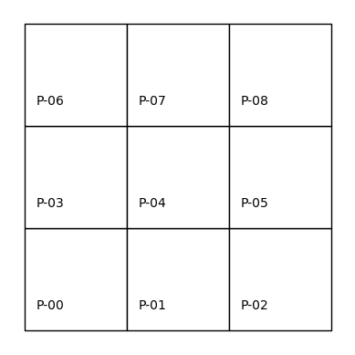
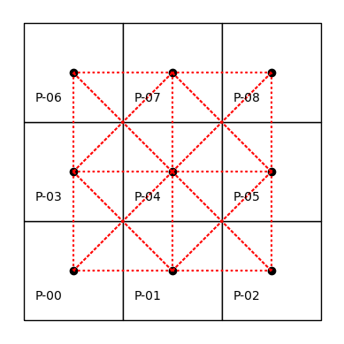
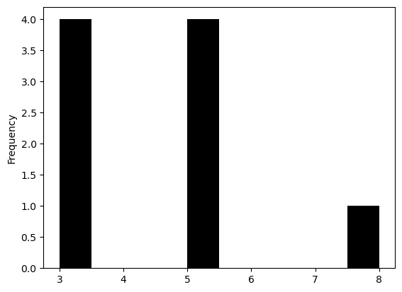

Pesos Espaciales#
Los pesos espaciales capturan el conocimiento sobre cómo se relacionan espacialmente las unidades de observación. Preguntas comunes como:
¿Qué barrios colindan con el mío?
¿Cuántas gasolineras hay a menos de 5 km de mi auto averiado?
son ejemplos de relaciones espaciales que dependen de la proximidad o adyacencia geográfica.
Para incorporar estas relaciones en el análisis estadístico, es necesario calcularlas entre todos los pares de observaciones. Esto da lugar a una topología, es decir, una estructura matemática que describe la conectividad espacial entre unidades. Las matrices de pesos espaciales permiten representar esta topología, integrando todas las observaciones dentro de un mismo espacio de análisis.
import contextily
import geopandas
import rioxarray
import seaborn
import pandas
import numpy
import matplotlib.pyplot as plt
from shapely.geometry import Polygon
from pysal.lib import cg as geometry
Los pesos espaciales son fundamentales en la ciencia de datos geográficos, ya que permiten representar relaciones espaciales entre observaciones.
En este capítulo se abordan distintas formas de construir estos pesos, diferenciando entre:
Pesos basados en adyacencia o contigüidad.
Pesos basados en distancia.
Pesos híbridos, que combinan varios criterios espaciales.
Estos conceptos se ilustran usando la clase de pesos espaciales del paquete pysal, disponible en su submódulo weights, que ofrece múltiples métodos para trabajar con estas estructuras.
from pysal.lib import weights
También se exploran las funcionalidades basadas en operaciones de conjuntos, que permiten construir pesos espaciales combinando relaciones.
Además, se revisan los formatos comunes de archivo para almacenar estos pesos y se incluyen visualizaciones que ayudan a comprender de forma más intuitiva estas estructuras abstractas.
Conectividad en el espacio#
En el caso de series de tiempo, la idea de una variable rezagada no es ambigua, en el espacio las cosas pueden complicarse.
En lo siguiente se asumen que las observaciones están organizadas en unidades espaciales, que pueden ser puntos en un grid regular o irregular, o regiones en un mapa.
Vecinos en el espacio#
El concepto de dependencia espacial implica la necesidad de determinar qué otras unidades en el sistema espacial tienen influencia en la unidad particular que se está considerando. Formalmente, esto se expresa en los conceptos de la topología como vecindad y vecino más cercano.
Consideremos un sistema \(S\) de \(N\) unidades espaciales, etiquetadas \(i = 1,2,\ldots N\), y una variable \(x\) observada para cada una de estas unidades espaciales. El conjunto de vecinos \(J\) para la unidad espacial \(i\), para el cual:
donde \(x_J\) es el vector de observaciones para \(x_j \forall j \in J\), y \(x\) es el vector que tiene todos los valores del sistema. De forma menos estricta, el conjunto de vecinos \(j\) para la unidad espacial \(i\) puede ser:
es decir, como las posiciones para las que la probabilidad marginal condicional para \(x_i\) no es igual a la probabilidad marginal no condicional. Note que hasta el momento no se ha mencionado nada respecto a las posiciones relativas de las unidades espaciales, solo la influencia a través de probabilidades condicionales.
Para introducir el aspecto espacial en estas definiciones de vecinos, se tiene esta definición:
donde \(d_{ij}\) es una medida de distancia entre \(i\) y \(j\) en un espacio apropiadamente estructurado (espacios euclideanos, espacios métricos, etc), y \(\epsilon_i\) es un punto de corte crítico para cada unidad espacial \(i\), que puede ser el mismo para todas las unidades espaciales.
Esta definción alternativa de vecindad introduce más estructura en el conjunto de datos espaciales, combinando una noción de dependencia estadística (relacionando magnitudes) con la noción de espacio (distancia y posición relativa).
El conjunto de vecinos espaciales puede representarse en una estructura de grafo con una matriz de conectividad asociada.
Contiguidad espacial#
Dos objetos espaciales son contiguos si comparten un borde común. Aunque esto parece simple, en la práctica puede ser más complejo, ya que existen distintas formas de definir esa “frontera compartida”.
Por ejemplo, una cuadrícula de 3x3 permite ilustrar las distintas maneras en que las unidades pueden estar conectadas espacialmente.
# Importamos las bibliotecas necesarias
import numpy
import geopandas
from shapely.geometry import Polygon
# Creamos una secuencia de 3 valores: [0, 1, 2]
l = numpy.arange(3)
# Generamos una malla de coordenadas (una cuadrícula de puntos) usando meshgrid
# xs y ys serán matrices 3x3 con coordenadas X e Y respectivamente
xs, ys = numpy.meshgrid(l, l)
# Inicializamos una lista vacía donde se almacenarán los polígonos
polys = []
# Iteramos sobre cada punto (x, y) de la cuadrícula
# flatten() convierte las matrices 2D en arreglos 1D para que podamos iterar más fácilmente
for x, y in zip(xs.flatten(), ys.flatten()):
# Creamos un polígono cuadrado unitario con vértices en sentido antihorario
# El polígono va desde (x, y) hasta (x+1, y+1), formando un cuadrado de 1x1
poly = Polygon([(x, y), (x + 1, y), (x + 1, y + 1), (x, y + 1)])
# Agregamos el polígono a la lista
polys.append(poly)
# Convertimos la lista de polígonos en una GeoSeries de geopandas
polys = geopandas.GeoSeries(polys)
# Creamos un GeoDataFrame con dos columnas:
# - "geometry": contiene los polígonos
# - "id": etiquetas con el formato 'P-00', 'P-01', ..., 'P-08'
gdf = geopandas.GeoDataFrame(
{
"geometry": polys,
"id": ["P-%s" % str(i).zfill(2) for i in range(len(polys))],
}
)
# Trazamos (plot) el GeoDataFrame `gdf`
# Cada celda se dibuja con borde negro (edgecolor="k") y relleno blanco (facecolor="w")
ax = gdf.plot(facecolor="w", edgecolor="k")
# Iteramos sobre cada celda del grid para añadir texto dentro de ella
# Usamos las coordenadas del centroide de cada polígono, ajustadas un poco (-0.25) para mejor alineación visual
for x, y, t in zip(
[p.centroid.x - 0.25 for p in polys], # Coordenada x del centroide, desplazada
[p.centroid.y - 0.25 for p in polys], # Coordenada y del centroide, desplazada
[i for i in gdf["id"]], # Identificador de cada celda, ej. "P-00"
):
# Dibujamos el texto `t` en la posición (x, y)
plt.text(
x,
y,
t,
verticalalignment="center", # Centra el texto verticalmente
horizontalalignment="center", # Centra el texto horizontalmente
)
# Ocultamos los ejes del gráfico para una presentación más limpia
ax.set_axis_off()
# Mostramos el gráfico
plt.show()

Contigüidad tipo Rook#
Una forma común de definir la adyacencia espacial es mediante la analogía con los movimientos del ajedrez. En la contigüidad tipo Rook, dos polígonos son vecinos si comparten un borde (no solo un vértice).
Aplicando esta regla en una cuadrícula, es posible identificar los vecinos de cada celda y construir una estructura que modele estas relaciones espaciales.
# Construye una matriz de contigüidad tipo "Rook" (torre del ajedrez)
# a partir de un GeoDataFrame (gdf) que contiene una cuadrícula regular de 3x3 celdas
wr = weights.contiguity.Rook.from_dataframe(gdf, use_index=True)
Observamos que el objeto w se construye siguiendo un patrón común en la biblioteca: primero se define el tipo de vecindad deseado (por ejemplo, weights.contiguity.Rook), y luego se utiliza un método constructor como from_dataframe().
El resultado puede visualizarse sobre la misma cuadrícula de polígonos etiquetados, donde las líneas punteadas rojas indican las conexiones (aristas) entre centroides de polígonos vecinos, como se muestra en la siguiente figura.
# Configura una figura y un solo eje (ax), asegurando que tenga proporciones iguales
f, ax = plt.subplots(1, 1, subplot_kw=dict(aspect="equal"))
# Dibuja la cuadrícula de polígonos sobre el eje definido
# Cada celda se representa con borde negro (edgecolor="k") y relleno blanco (facecolor="w")
gdf.plot(facecolor="w", edgecolor="k", ax=ax)
# Recorre cada celda del grid para agregar su identificador como texto
# Se usan las coordenadas del centroide de cada polígono, ligeramente desplazadas para centrado visual
for x, y, t in zip(
[p.centroid.x - 0.25 for p in polys], # Coordenadas x de los centroides desplazadas
[p.centroid.y - 0.25 for p in polys], # Coordenadas y de los centroides desplazadas
[i for i in gdf["id"]], # Identificadores de cada celda, ej. "P-00"
):
# Agrega el texto sobre la figura
plt.text(
x,
y,
t,
verticalalignment="center", # Centra el texto verticalmente
horizontalalignment="center", # Centra el texto horizontalmente
)
# Dibuja la conectividad espacial definida por la matriz de pesos `wr`
# Se visualiza como líneas punteadas rojas entre los centroides de polígonos vecinos
wr.plot(gdf, edge_kws=dict(color="r", linestyle=":"), ax=ax)
# Oculta los ejes de la figura para una visualización más limpia
ax.set_axis_off()
El atributo neighbors en objetos de pysal guarda las relaciones de vecindad como un diccionario: la clave representa una observación, y su valor es la lista de vecinos.
Este formato es eficiente computacionalmente, ya que aprovecha la sparsidad de las matrices de pesos espaciales, almacenando solo los valores distintos de cero.
wr.neighbors
{0: [1, 3],
1: [0, 2, 4],
2: [1, 5],
3: [0, 4, 6],
4: [1, 3, 5, 7],
5: [8, 2, 4],
6: [3, 7],
7: [8, 4, 6],
8: [5, 7]}
Saber que el polígono 0 solo tiene como vecinos a los polígonos 1 y 3 implica que los demás (2, 4, 5, 6, 7 y 8) no son vecinos bajo la contigüidad tipo Rook.
Por ello, no se almacena información sobre no-vecinos, lo que optimiza el uso de memoria. Si fuera necesario, aún es posible construir una matriz completa que incluya todas las relaciones.
pandas.DataFrame(*wr.full()).astype(int)
| 0 | 1 | 2 | 3 | 4 | 5 | 6 | 7 | 8 | |
|---|---|---|---|---|---|---|---|---|---|
| 0 | 0 | 1 | 0 | 1 | 0 | 0 | 0 | 0 | 0 |
| 1 | 1 | 0 | 1 | 0 | 1 | 0 | 0 | 0 | 0 |
| 2 | 0 | 1 | 0 | 0 | 0 | 1 | 0 | 0 | 0 |
| 3 | 1 | 0 | 0 | 0 | 1 | 0 | 1 | 0 | 0 |
| 4 | 0 | 1 | 0 | 1 | 0 | 1 | 0 | 1 | 0 |
| 5 | 0 | 0 | 1 | 0 | 1 | 0 | 0 | 0 | 1 |
| 6 | 0 | 0 | 0 | 1 | 0 | 0 | 0 | 1 | 0 |
| 7 | 0 | 0 | 0 | 0 | 1 | 0 | 1 | 0 | 1 |
| 8 | 0 | 0 | 0 | 0 | 0 | 1 | 0 | 1 | 0 |
En la matriz de contigüidad, la mayoría de las entradas son ceros. De los 81 posibles enlaces (9×9), solo 24 son valores diferentes de cero, lo que resalta su naturaleza dispersa.
wr.nonzero
24
Las representaciones dispersas de pesos espaciales permiten ahorrar memoria sin perder información, ya que solo almacenan los valores distintos de cero.
En una cuadrícula 3x3, la matriz de pesos tendría 9 filas y 9 columnas. A diferencia del tiempo, donde las relaciones suelen ser unidireccionales, las relaciones espaciales son bidireccionales y el orden de las observaciones en la matriz es arbitrario.
Las matrices de pesos espaciales son similares a las matrices de adyacencia en teoría de grafos, donde cada observación es un nodo y los pesos representan las conexiones (arcos) entre ellos. Este paralelismo permite aplicar conceptos de grafos en ciencia de datos geográficos, aunque también se requieren técnicas especializadas para tratar particularidades del espacio.
Respecto a la contigüidad tipo Rook, aunque polígonos como el 0 y el 5 comparten un vértice, no son considerados vecinos porque no comparten un borde. Para incluir conexiones basadas en vértices, se puede usar la contigüidad tipo Queen, más flexible, que considera vecinos a los polígonos que comparten vértices o bordes.
Contigüidad tipo Rook#
# Construye una matriz de contigüidad tipo "Queen" (reina del ajedrez)
# a partir de un GeoDataFrame (gdf) que contiene una cuadrícula regular de 3x3 celdas
wq = weights.contiguity.Queen.from_dataframe(gdf,use_index=True)
# Visualiza la estructura de vecinos (neighbors) del objeto wq
# Esto devuelve un diccionario donde:
# - Las claves son los identificadores de las unidades espaciales
# - Los valores son listas de los vecinos directos de cada unidad
wq.neighbors
{0: [1, 3, 4],
1: [0, 2, 3, 4, 5],
2: [1, 4, 5],
3: [0, 1, 4, 6, 7],
4: [0, 1, 2, 3, 5, 6, 7, 8],
5: [1, 2, 4, 7, 8],
6: [3, 4, 7],
7: [3, 4, 5, 6, 8],
8: [4, 5, 7]}
Además de expresar las relaciones de vecindad en forma de listas o matrices, también es posible visualizar el grafo, como se muestra en la siguiente figura.
# Configura la figura y un eje (ax) con proporciones iguales
# Esto asegura que los polígonos no se deformen en el gráfico
f, ax = plt.subplots(1, 1, subplot_kw=dict(aspect="equal"))
# Dibuja el GeoDataFrame (gdf) que contiene la cuadrícula de polígonos
# Cada celda se muestra con borde negro (edgecolor="k") y fondo blanco (facecolor="w")
gdf.plot(facecolor="w", edgecolor="k", ax=ax)
# Itera sobre cada polígono para agregar una etiqueta de texto en el centro
# Se usan las coordenadas de los centroides, desplazadas -0.25 unidades para mejor alineación
for x, y, t in zip(
[p.centroid.x - 0.25 for p in polys], # Coordenadas X de los centroides desplazadas
[p.centroid.y - 0.25 for p in polys], # Coordenadas Y de los centroides desplazadas
[i for i in gdf["id"]], # Etiquetas o IDs de cada polígono, como 'P-00', 'P-01', etc.
):
# Añade el texto (ID) en la posición (x, y)
plt.text(
x,
y,
t,
verticalalignment="center", # Centrado vertical
horizontalalignment="center", # Centrado horizontal
)
# Dibuja las relaciones de conectividad espacial basadas en la matriz Queen
# Se trazan líneas punteadas rojas (color="r", linestyle=":") entre los polígonos que son vecinos
wq.plot(gdf, edge_kws=dict(color="r", linestyle=":"), ax=ax)
# Oculta los ejes del gráfico para una visualización más limpia y estética
ax.set_axis_off()

Usar Queen en lugar de Rook permite considerar como vecinos a los polígonos que comparten un vértice. Por ejemplo, el polígono 0 ahora también tiene como vecino al 4, además del 1 y el 3.
Al igual que el diccionario neighbors codifica las relaciones espaciales, el diccionario weights indica la fuerza del vínculo entre cada unidad y sus vecinos. En el caso de pesos por contigüidad, esta matriz suele ser binaria, indicando simplemente si hay o no una conexión.
En objetos W de pysal, los valores de los pesos se almacenan en el atributo weights.
wq.weights
{0: [1.0, 1.0, 1.0],
1: [1.0, 1.0, 1.0, 1.0, 1.0],
2: [1.0, 1.0, 1.0],
3: [1.0, 1.0, 1.0, 1.0, 1.0],
4: [1.0, 1.0, 1.0, 1.0, 1.0, 1.0, 1.0, 1.0],
5: [1.0, 1.0, 1.0, 1.0, 1.0],
6: [1.0, 1.0, 1.0],
7: [1.0, 1.0, 1.0, 1.0, 1.0],
8: [1.0, 1.0, 1.0]}
El atributo weights, al igual que neighbors, es un diccionario que solo guarda los pesos distintos de cero. Aunque en pesos por contigüidad todos los vecinos suelen tener el mismo valor, es clave que los pesos y vecinos estén alineados: el primer vecino tiene asignado el primer peso, y así sucesivamente.
Esto será especialmente relevante cuando trabajemos con pesos basados en distancia, donde los valores varían.
Además, el objeto W de pysal incluye otros atributos útiles, como cardinalities, que indica cuántos vecinos tiene cada observación.
wq.cardinalities
{0: 3, 1: 5, 2: 3, 3: 5, 4: 8, 5: 5, 6: 3, 7: 5, 8: 3}
El atributo histogram del objeto W muestra la distribución del número de vecinos por observación, ofreciendo una visión general de cómo se distribuyen las cardinalidades en el conjunto espacial.
wq.histogram
[(3, 4), (4, 0), (5, 4), (6, 0), (7, 0), (8, 1)]
Podemos obtener una representación visual sencilla convirtiendo las cardinalidades en una pandas.Series y generando un histograma para observar la frecuencia de vecinos por unidad espacial.
pandas.Series(wq.cardinalities).plot.hist(color="k");

Los atributos cardinalities y histogram permiten identificar asimetrías en el número de vecinos por observación. Esto es importante en análisis espaciales como la autocorrelación o la regresión espacial.
Por ejemplo, en una cuadrícula 3x3:
Las esquinas tienen 3 vecinos,
Los bordes, 5 vecinos,
Y el centro, 8 vecinos. No hay unidades con 4, 6 o 7 vecinos.
Por convención, cada par ordenado de vecinos se representa como un enlace con peso distinto de cero. El atributo s0 indica el número total de enlaces en el objeto \(W\).
wq.s0
40.0
En este caso, los pesos tipo Queen casi duplican el número de enlaces comparados con los de tipo Rook.
El atributo pct_nonzero indica la densidad de la matriz de pesos espaciales, es decir, el porcentaje de entradas diferentes de cero (si se almacenara la matriz completa).
wq.pct_nonzero
49.382716049382715
Pesos espaciales en datos geográficos reales#
Aunque los ejemplos con cuadrículas regulares ayudan a entender el funcionamiento de los pesos espaciales en pysal, su aplicación real requiere trabajar con datos geográficos reales.
pysal permite construir objetos de pesos espaciales a partir de formatos comunes como shapefiles, que no incluyen información explícita sobre vecindad. En estos casos, la relación entre vecinos debe construirse manualmente, y pysal lo hace de forma eficiente utilizando estructuras de indexación espacial.
Un ejemplo práctico es la construcción de pesos espaciales para sectores censales en San Diego, California.